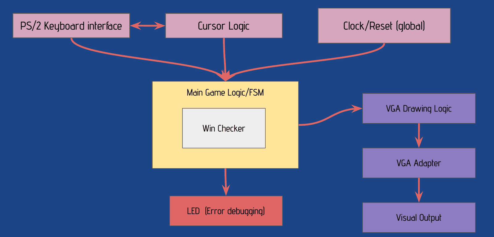
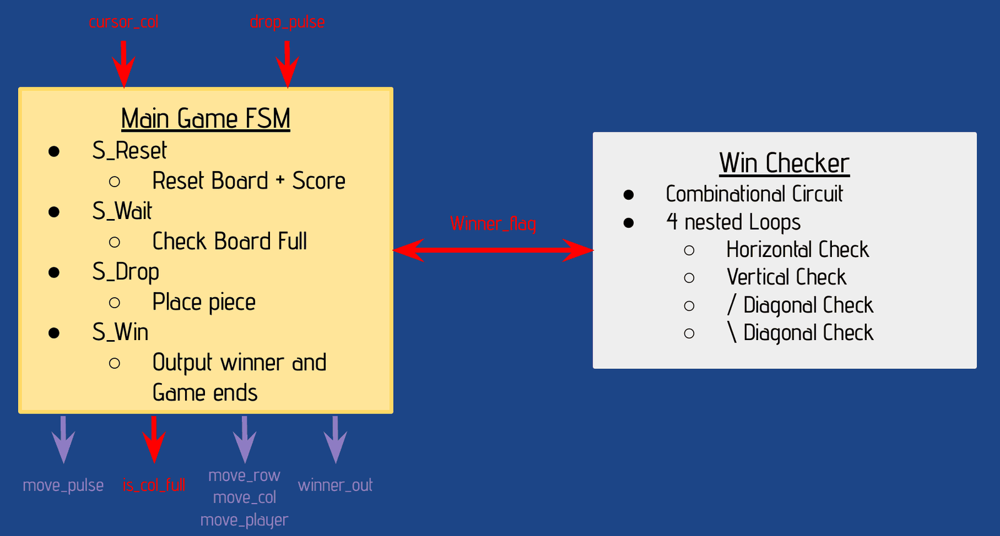
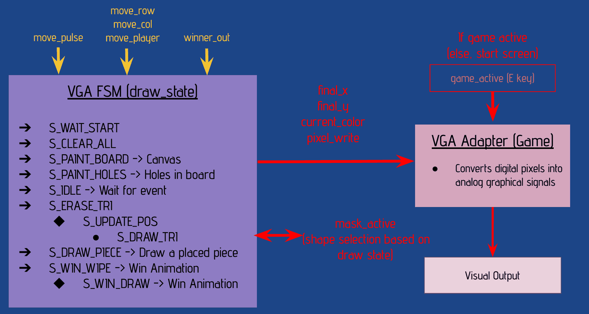
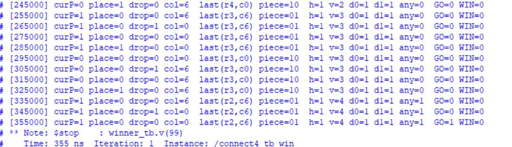

Connect Four in hardware
ECE241 Digital Systems, 2025. Built with Patrick Szpargala.
Verilog, SystemVerilog, ModelSim, Quartus Prime, DE1-SoC FPGA, VGA, PS/2
A two-player Connect Four game that runs on the DE1-SoC FPGA with no processor involved. Players move a cursor with a PS/2 keyboard and drop pieces into a 7×6 board drawn on a VGA monitor. The hardware places each piece, rejects moves into full columns, and checks for four in a row after every drop.


How it fits together
Keyboard input becomes single-cycle pulses: move left, move right, drop. The main game FSM owns the board and calls the win checker after every move. A separate drawing FSM watches for changes and updates the screen through the VGA adapter, and the board's LEDs show errors such as trying to drop into a full column.

Game logic
The game FSM has four states: reset, wait, drop and win. It takes the cursor's column and a drop pulse, finds the lowest empty row in that column, and writes the piece. The win checker is combinational. It looks for four matching pieces horizontally, vertically and along both diagonals, and raises a flag that sends the FSM to its win state.

Drawing the screen
Drawing is handled by a separate FSM. It clears the screen, paints the board and its holes, then sits idle until something changes. Moving the cursor erases the old triangle and draws a new one, a dropped piece is drawn in its cell, and a win starts a wipe animation. Each pixel goes to the VGA adapter as an x and y position, a colour and a write enable.

Reading the keyboard
The PS/2 keyboard clock is slow and has no relation to the board's 50 MHz clock, so it first passes through a two-flip-flop synchronizer. On each falling edge of the keyboard clock one bit is shifted into a register. Once a full 11-bit packet has arrived, the middle 8 bits are decoded, and a key like A produces a one-cycle left_pulse that moves the cursor one column.
Testing in simulation
We simulated the game logic in ModelSim before putting it on the board. In this run of the win-checker testbench, pieces go into two columns in turns until one player has four stacked vertically. The vertical count v reaches 4 and the game-over flag GO latches.

Problems we ran into
- The RAM block generated by Quartus wouldn't give us the read and write access we needed. We switched the project to SystemVerilog and wrote the board memory ourselves as a two-dimensional array.
- Using two VGA modules, one for a start-screen image and one for a board image, caused timing problems. We dropped the board image and drew the board in logic instead.
- Keyboard input was unreliable until we added the synchronizer, based on Prof. Stephen Brown's PS/2 example code for the course.
My part
Patrick and I split the work by module. I wrote the game FSM, the horizontal and vertical win checks, the screen reset and the full-column error detection, designed the cursor, and drew up the top-level block diagram. We built the board memory and the data flow between the game FSM and the drawing FSM together. Patrick wrote the drawing FSM, the diagonal win checks, the keyboard interface and the cursor logic.
Code
- connect4.v The board, controller FSM and a win checker that looks outward from the last piece dropped. This version takes the column from the board's switches and reports to the LEDs. The VGA and keyboard modules aren't included.